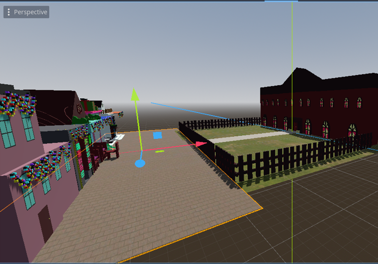
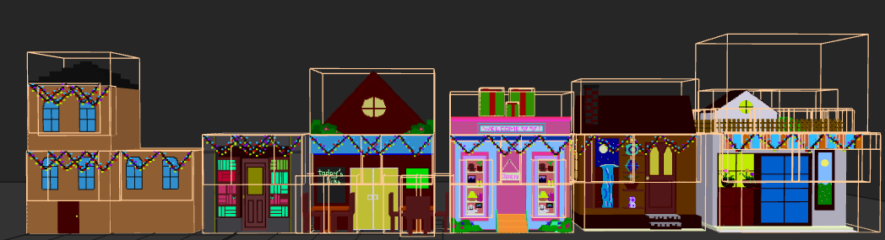
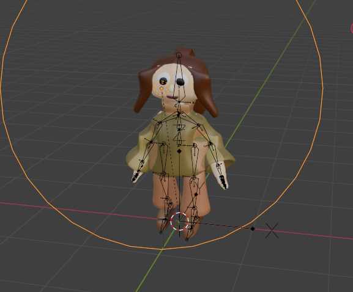
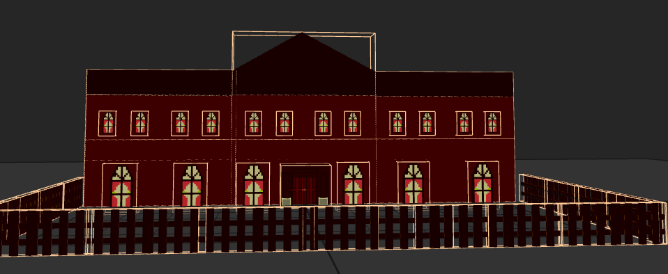
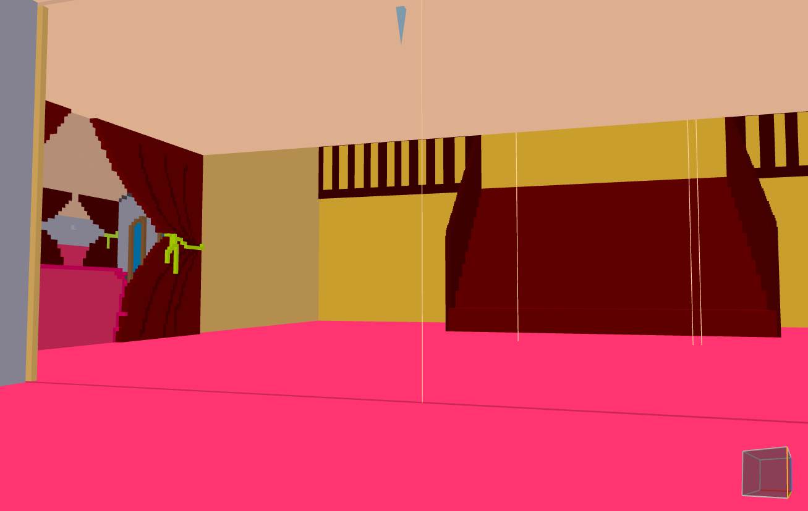
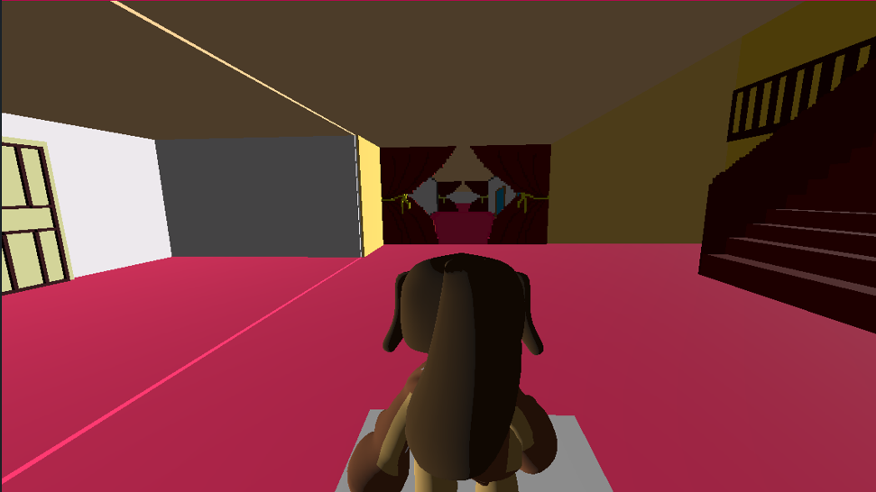

A 3D scene I modeled and animated over forty days — the setting for a fantasy novel I am writing on the side. Original assets in MagicaVoxel and Blender, characters rigged and animated, full interactive scene deployed in Godot.

The fantasy novel I am writing has a small market town at its centre — narrow streets, painted shopfronts, a palace on the hill. Words were one way to describe it. Building it was another. I picked MagicaVoxel because it lets me work the way I think — small decisions, one block at a time — and went from there.
What started as a reference for myself turned into a full interactive scene. By the end, I had buildings, a palace, a rigged main character, and a Godot project where you can walk through it.





Started with a single shopfront in MagicaVoxel. Repeated the process for every building, then the palace, then the character — one mesh per asset.
Imported the character mesh into Blender. Built a bone hierarchy, weight-painted each vertex group, tested poses in the viewport before exporting.
Lit each interior in Blender; baked simple textures so MagicaVoxel's flat colors would read with depth in Godot's renderer.
Imported every asset into Godot, hooked up a third-person camera and a basic character controller, and assembled the scene from the building blocks.
The most useful thing I learned from this was not 3D — it was finishing. Forty days, every day, until the scene was walkable. — What I took back to my data work